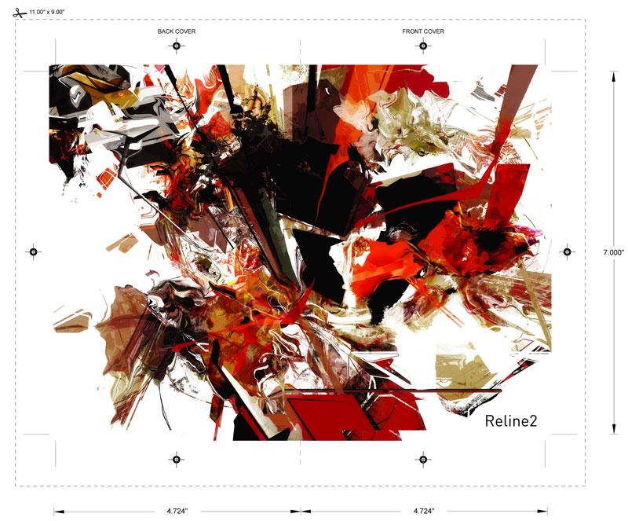
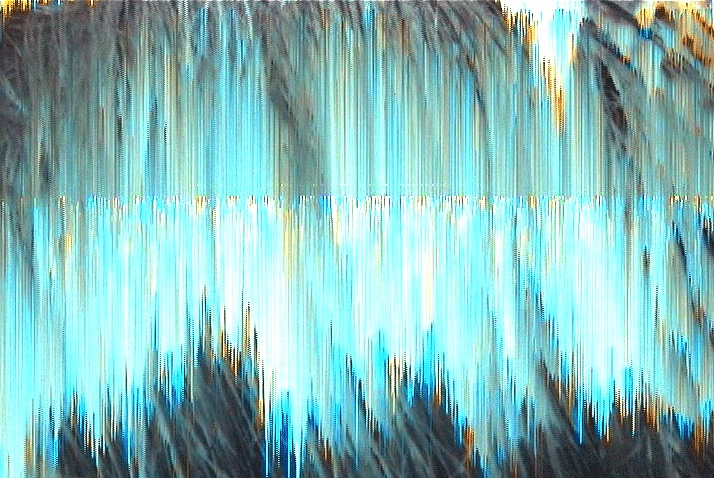
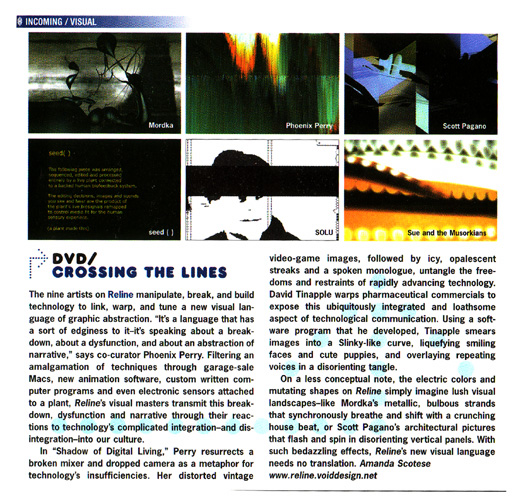

Reline
Reline is a video art DVD compilation series I co-created with Scott Pagano. We started with a vision in 2001 to build a lasting record of the emergence of technology-based art. The series featured artists from around the world employing custom software and modified hardware to create work focused on graphic abstraction, the broken output of dysfunctional systems, and the desire to re-vision both old and new technologies.
The Vision
Scott and I began Reline because we saw something happening that nobody was archiving. Artists everywhere were using code and hardware to create new visual forms, but the work was ephemeral. It lived on projections at clubs and galleries, on screens at festivals, and then it was gone. We wanted to create a physical object that captured this moment and gave it permanence. The DVD was the medium of the time, and we used it to build something that was part video archive and part work of art itself. Often seen lugging their projectors to and from venues ranging from dive bars to galleries, these video mavens had a pixel-itching desire to augment and enhance environments and static architecture. Reline served the dual goal of contextualizing and developing an emerging media form, establishing solid ground for video art in a world with an increasing desire to have a dialog with its screen.
Reline 1 (2002)
The first Reline DVD was released in 2002 on Form Records and neither-field. The DVD cover was designed by Keep Adding. It featured one hour of work from 10 artists, bringing together a diverse array of work showcasing artists engaged with the creation of new visual forms derived from experimental processes and techniques, often foregrounding the un-criticized role technology plays in our lives. The image assemblages were created using everything from laptop-driven generative software, busted cameras, and circuit-bent video mixers, all with a drive to heartily misuse industry standard production tools.
My own piece, The Shadow of Digital Living, was about my experience with technology as it evolved during my lifetime. I suffer from a condition called Repetitive Strain Injury, caused by constant and repetitive exposure to computers. Many people are beginning to break down biologically as a result of un-ergonomic, purposefully anti-body input devices. RSI forced me to cut my long hair off because I simply could not physically comb through the knots. This happened simultaneously to the dot-boom/dot-bust economic crash. I found irony in this. Using a broken DV camera, dropped during a political protest rally, and a circuit-bent video mixer, I created re-processed images of my hair that became a metaphor for the way technology both positively and negatively integrates into society.
The response exceeded anything we expected. Reline 1 screened at the Yerba Buena Center for the Arts in San Francisco, the Guggenheim Bilbao in Spain, Lincoln Center in New York City, the Austin Museum of Digital Art, the Santa Fe Art Institute, and galleries and festivals throughout the US and Europe.
Reline 1 Artists
- Chris Musgrave, mregh-u-linea. Material produced with a generative max/msp/nato 0+55 patch. High db/low frequency sound reinforcement and dark room required for experiential reproduction.
- Sue and the Musorkians, film me. An exploration of somebody else's home movie through aural and visual processes, both analog and digital. Made from 8mm film, a digital video camera, and a powerbook running a max-based data processing program. Music from AGF's album "head slash bauch."
- David Tinapple, radial medicate. An exploration into patterns of pharmaceutical industry marketing, using technology to look inside images and emphasize the patterns they represent in our daily lives and culture.
- Scott Pagano (co-curator), ok.town re.work. Rearrangement and restructuring of architectural forms and patterns found in downtown Oakland, CA. Custom image slicing and reforming systems transform recognizable space into distant imagined cities.
- Phoenix Perry (co-curator), The Shadow of Digital Living. Re-processed images exploring the way technology both positively and negatively integrates into society, made with a broken DV camera and a circuit-bent video mixer.
- Devan Simunovich (c-trl), point.sys. Exploring the inherent difference in point coordinate systems across physical substrates, contrasting the ability to gauge dimensions within virtual worlds stored as neural states versus synthetic boolean systems.
- Mordka (Jarrett Smith & Jeffers Egan), Niosumed. A live performance created by controlling an image synthesizer using TouchMixer and an external slider box. The visual development was more like making music than traditional animation. Audio by Twerk.
- SOLU, ALIEN_FURY. Created with the realtime video environment nato.0+55, a clip taken from a continuous stream of nonstop visual jamming. No editing after the realtime session. Everything created with and within the sound. Sound by ONCE11.
- Eugen Danzinger, [spit]. Produced with videoscript autorecord patch and After Effects. Audio snippet by Surgeon.
- seed(), seed(). Cross-modal biosignals, plant aesthetics, and l-systems. A plant made this.
Phoenix Perry, The Shadow of Digital Living

Sue and the Musorkians, film me

Sue and the Musorkians, film me
Frieze magazine review
Reline 2 (2006)
The second volume came out in September 2006 on Microcinema's Blackchair label. At 64 minutes in 5.1 surround sound, it featured 19 works. Where the first volume captured a broad spectrum from lo-fi to hi-fi, Reline 2 pushed further into the high end of experimental production while maintaining a diversity of approaches. The artists investigated modern mythology, examined environments, exploded form, and played with similes between machine and body. From buildings ripping apart by unseen forces to characters on strange journeys in wild imagined spaces, these videos explored the integration of technology into every layer of our lives. Through the use of custom software, unique processing methods, and envelope-pushing applications of traditional production tools, these pieces pushed technical limits and the very bounds of style and imagination.
On Reline 2, I contributed Drawdown, a collaboration with Arnold Steiner with sound by Brian Jackson (Infinite Volume), completed in 2004. Drawdown refers to the process by which the dominant species in an ecosystem uses up the surrounding resources faster than they can be replaced. The piece explores the relationship between man, machine, environment and the culture of greed in the world. Looking at the body as both a polluted system and a vehicle for enlightenment, we see the human form as an evolving machine empty of meaning in and of itself. In this context, the delusions of ego and self-importance become clear. Drawdown suggests we look beyond our own selfish desire to see the vast beauty and abundance of the world around us. As we look for the basic meaning of human existence amidst a technological culture, we must question if our technologies aid human evolution or accelerate the process of extinction.
Reline 2 Artists
- PLEIX, Sometimes. Music by Kid606.
- Scott Pagano, From Brown to Green. Music by Twerk.
- Robert Seidel, E3. Music by Michael Engelhardt (4memusic).
- Phoenix Perry, Arnold Steiner & Brian Jackson, Drawdown.
- Scott Arford, Untitled for Televisions.
- Motomichi, Laptops and Martini's. Music by Otto Von Schirach.
- Tronic Studio, Regret. Music by Q Department.
- Magnetic Stripper, 3x6.
- C-TRL Labs, Musee Hofstdat. Music by Anon.
- D-Fuse, Data_Flow. Music by Lusine ICL.
- Jude Greenaway, Celluloid.
- Ben Sheppee, Regen3rat10n. Music by Sewn.
- Owlandia, An Open Thought.
- Jaron Albertin, For You. Music by Solvent.
- Actop, Manufactured Music. Music by Radioboy.
- Sue Costabile, Still Not Still. Music by AGF.
- Chris Musgrave, Span.
- Yoshi, Aditi. Music by The Knobs.
- Tenzin Wangchuck, Laser Graffiti Writer. Music by Venetian Snares.

PLEIX, Sometimes
Scott Pagano, From Brown to Green
Robert Seidel, E3
Phoenix Perry, Arnold Steiner & Brian Jackson, Drawdown
Scott Arford, Untitled for Televisions
Magnetic Stripper, 3x6
C-TRL Labs, Musee Hofstdat
D-Fuse, Data_Flow
Jude Greenaway, Celluloid
Ben Sheppee, Regen3rat10n
Owlandia, An Open Thought
Jaron Albertin, For You
Actop, Manufactured Music
Sue Costabile, Still Not Still
Chris Musgrave, Span
Yoshi, Aditi
Tenzin Wangchuck, Laser Graffiti Writer
Press
WIRE (on Reline 1): "The 10 video manipulations on show here hint at some of the deeper currents running through the twin dimensions of programmable space."
XLR8R (on Reline 1): "The ten artists on Reline manipulate, break, and build technology to link, warp, and tune a new visual language of graphic abstraction."
RES Magazine, Jesse Ashlock (on Reline 2): "The 18 experimental films on Reline2, the second in a series of progressive audiovisual compilations from DVD distributor Microcinema, hit the senses like a rollercoaster ride, producing vertigo, wooziness and a profound uncertainty about which way is up... Overall, Reline2 succeeds impressively at challenging seemingly hardwired perceptions about spatial relationships and the interface between the self and the outside world."
Where Are They Now
When Scott and I put Reline together, we were capturing a moment. But the people in that moment kept going. Here is some of what the Reline artists have been up to in the years since.
- Scott Pagano is now a 3D artist and creative technologist based in Los Angeles. He creates concert visuals for artists like Skrillex, Zedd, and Koan Sound, working with Houdini and Unreal Engine. His work has been shown at Ars Electronica and TED Global.
- Robert Seidel is based in Berlin and continues to make immersive audiovisual work. He was Artist in Residence at the Jena Philharmonic in 2025/26 and created TREMORS (2024), a piece exploring AI and motion painting. His large-scale installation petrichor has toured internationally.
- D-Fuse, founded by Mike Faulkner, remain an active audiovisual collective in London. Their recent work addresses environmental and social themes, including VR projects about Amazon deforestation.
- PLEIX, the Paris collective, are still producing work. In 2024 they completed a sculpture project in Luxembourg. Their work has shown at Centre Pompidou and the Guggenheim Bilbao.
- Motomichi Nakamura is a projection mapping artist based in New York, teaching at NYU ITP and the School of Visual Arts. His work is in the collection of the Whitney Museum of American Art. In 2024 and 2025 he showed "Cannonballs" at Balloon Museum locations in London, Dusseldorf, and San Francisco.
- Jaron Albertin transitioned from motion graphics into commercial directing and is now represented by Smuggler, directing campaigns for Harley-Davidson, Ford, Lexus, and Under Armour. His debut feature film "Weightless" (2017) was a New York Times Critics' Pick.
- Ben Sheppee is CEO of Observatory, a creative studio in London's Design District. He directed visual content for Jacob Collier's 2024 world tour including the sold-out O2 Arena show. His gallery work has been shown at the Tate, National Portrait Gallery, and Serpentine. He also founded Lightrhythm Visuals (2003), which published 240 films by over 70 artists from five continents.
- Jude Greenaway co-runs the studio Greenaway & Greenaway in London with his brother Jolyon, creating large-scale projection mapping and immersive installations. They worked on visuals for the London 2012 Olympics and continue to produce commercial and festival work including Eric Prydz's Holosphere 2.0 live show.
- Sue Costabile (now SUE-C / Sue Slagle) continues performing live cinema in the Bay Area and Portland, using a custom Max/MSP/Jitter system she has been developing since 1998. She won a 2020 Creative Capital Award and is a MacDowell Fellow. In 2022 she collaborated with Negativland on a live performance at the Music and Gaming Fest in DC.
- Dev Harlan (Devan Simunovich / C-TRL Labs) is a Brooklyn-based sculptor and digital artist. He won a 2022 MOZAIK Artist Grant and showed at Mesh Fair 2024 with sculptural assemblages of e-waste and natural stone. His earlier C-TRL work included a 360-degree film for HP screened at Coachella and the Vornado/Google Times Square 4K display launch.
- David Tinapple is an Assistant Professor at Arizona State University in the School of Arts, Media and Engineering. He co-designed ASU's Digital Culture undergraduate degree program and created CritViz.com, an online peer-review tool for classrooms.
- Scott Arford remains active in the Bay Area experimental sound community, teaching at California College of the Arts in Oakland. He founded the legendary 7hz warehouse venue in San Francisco (1995-2002) and continues to create dense electronic compositions from radio static and field recordings.
- Chris Musgrave is also a founding member of Lumerians, a psychedelic/krautrock band based in the SF/Oakland area.
- Yoshi Sodeoka is a prolific multimedia artist and musician based in New York City. His work is in the permanent collections of the Museum of the Moving Image and SFMOMA. He has created visuals for Metallica and Tame Impala and editorial illustration for The New York Times, Wired, and The Atlantic. In January 2025, his piece "Infinite Ascent" ran nightly on screens across Times Square as part of Times Square Arts.
- Jarrett Smith (Mordka) co-founded Derivative, the Toronto-based company behind TouchDesigner, now one of the most widely used creative coding platforms in the world. He remains active as Product Architect at Derivative. He led engineering on the Living Characters system developed for Disney/Pixar and was co-visionary of the Plastikman Live Tour which performed at the Guggenheim New York. He has also developed installation technology for Jenny Holzer and Bill Viola.
- Jeffers Egan (Mordka) continues working in creative technology and real-time visual programming with TouchDesigner.
- Jim Ellis (Magnetic Stripper) worked at Obscura Digital in San Francisco, the pioneering projection mapping studio that created landmark projections on St. Peter's Basilica at the Vatican and the Empire State Building. Obscura was acquired by Madison Square Garden in 2017.